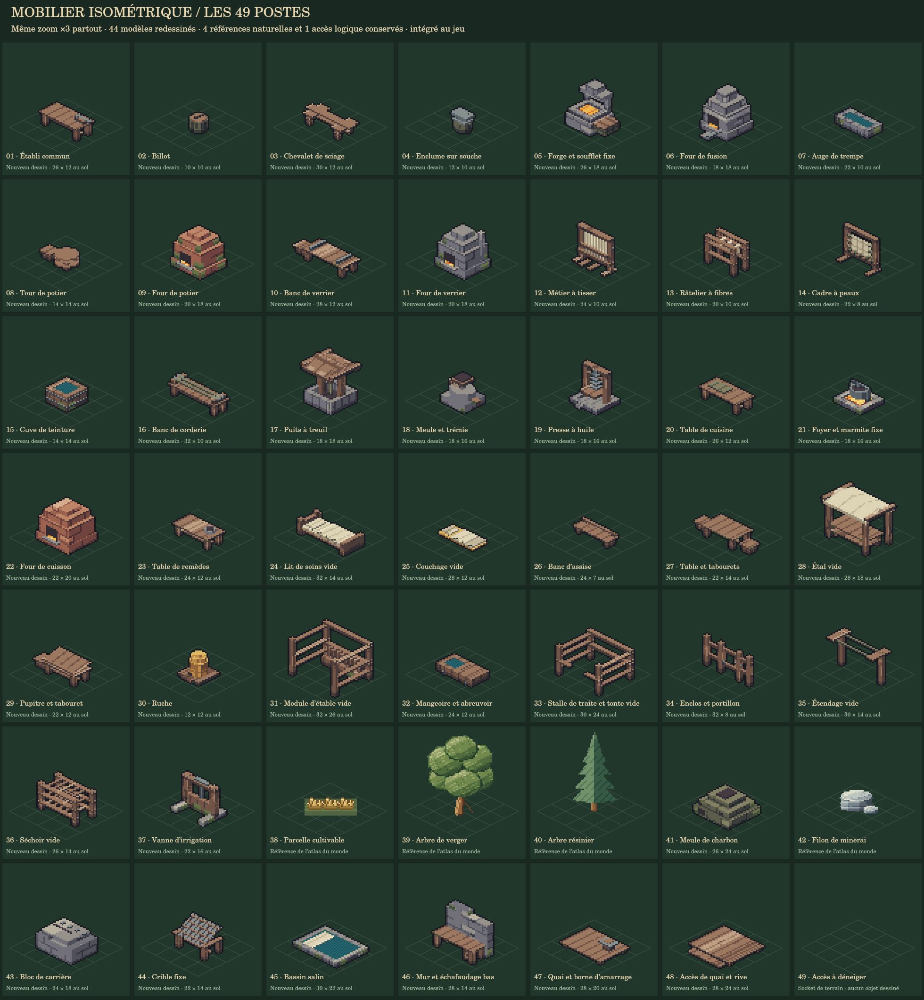

Mobilier et postes de travail isométriques
44 modèles JavaScript, à l’échelle des personnages actuels. Les quatre postes naturels et l’accès au déneigement complètent les 49 entrées existantes.
Intégré au jeu. Personnages en quatre directions conservés. Les meubles ont une vue fixe ; les sockets placent l’utilisateur et orientent son animation. Bâtiments, collisions et postes raccordés au monde.
PNG du poste vide · Catalogue et sockets · Vérifications
Les couchages suivent les axes du sol. La pose couchée existante s’adapte au support en conservant ses calques. Les personnages debout utilisent leurs vues actuelles.
Planches et animation
Tous les postes vides · Postes avec PNJ · Onze palettes · Échelle du joueur actuel · Aperçu animé


